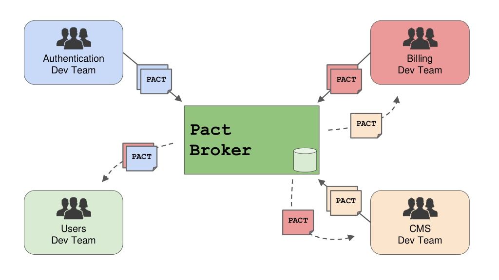

DSL
Pact provides an easy to use DSL to write your customer expectations.
new PactDslJsonArray()
.array() # open an array
.stringValue("a1") # choose the method that is valid for arrays
.stringValue("a2") # choose the method that is valid for arrays
.closeArray() # close the array
.array() # open an array
.numberValue(1) # choose the method that is valid for arrays
.numberValue(2) # choose the method that is valid for arrays
.closeArray() # close the array
.array() # open an array
.object() # now we work with an object
.stringValue("foo", "Foo") # choose the method that is valid for objects
.closeObject() # close the object and we're back in the array
.closeArray() # close the array
Headers
The Pact DSL offers a convinient way to do a matching on request and response headers.
.given("default")
.uponReceiving("retrieving goal data")
.path("/goals")
.headers(requestHeaders)
Authentication
Sometimes you may need to add things to the requests that can't be persisted in a pact file. Examples of these would be authentication tokens, which have a small life span.
@TargetRequestFilter
public void exampleRequestFilter(HttpRequest request) {
request.addHeader("Authorization", "OAUTH hdsagasjhgdjashgdah...");
}
Pact Broker
How do could we share Pacts? Sharing contracts by email works pretty well. But as soon as you have multiple services using pact, you need some kind of versioning for your pacts. The soulution is called Pact Broker.
A Pact Broker isn't just a file storage:
- The Broker provides Versioning, Tagging, Rest-API
- Dependency Graph
- Living documentation for free
- Build Pipeline integration

How to setup a pact broker:
docker pull dius/pact-broker- Setup a postgres database
- Ready to go
How to publish pact files to the broker:
- Configure
brokerUrlandpactDirectory - Run
mvn pact:publishto push your contracts to the broker
How to pull pact files from the broker:
- Run
mvn pact:verifyto pull all the contracts and verify your provider against it - Publish results of a provider verification with setting the following system property:
-Dpact.verifier.publishResults=true
How to add new interactions without breaking everything
In summary: keep the CI running against a stable version of the pact, while simultaneously providing a new version for the provider team so they can update their code and provider states. Once both the stable and the new versions of the pact are green, the new version can be published as the stable version.
Pact in comparison to other API testing/documentation frameworks
| Feature | Pact | Restdocs | Swagger |
|---|---|---|---|
| Live Documentation | yes | yes | no |
| HATEOAS Support | yes | yes | no |
| Integration/ Maintainance effort | high | high | low |
| Contracts | yes | no | no |
| Versioning | yes | partly | partly |
| Universallity | yes | partly | no |
As this table shows, these tools solve different problems and can be used together. A Pact documents the integration between a particular consumer and provider very well. However, it doesn't provide general documentation for a provider, which Swagger and RESTDocs do very well.
Experiences
Experiences
- Increases confidence when coding & deploying (CD)
- Collaborative API design
- Living API documentation
Pitfalls
Pitfalls
- Provider state setup for each interaction (Pre conditions, state - even if it should be stateless)
- Getting used to DSL is hard
- Don't limit to happy path (Response code when user from UserService doesn't exist)
- Automation isn't trivial (Pipeline)
Limitations
- Limited Media Type support (no XML)
- No Websocket support